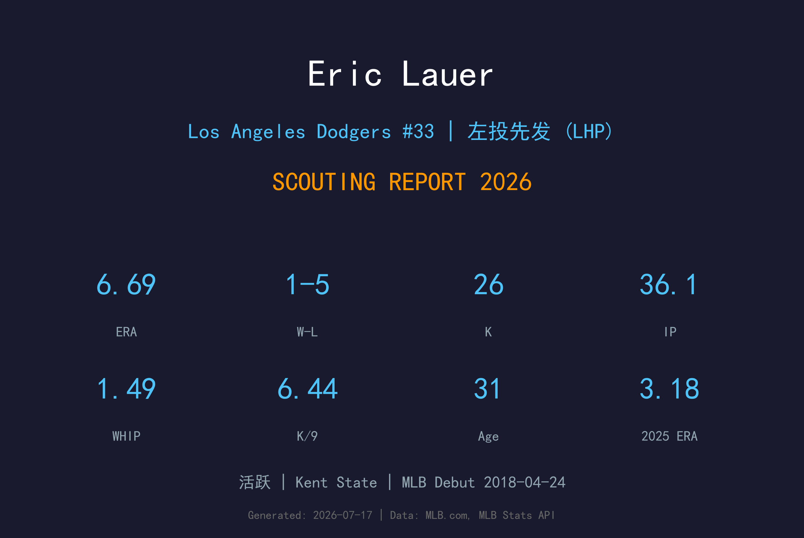
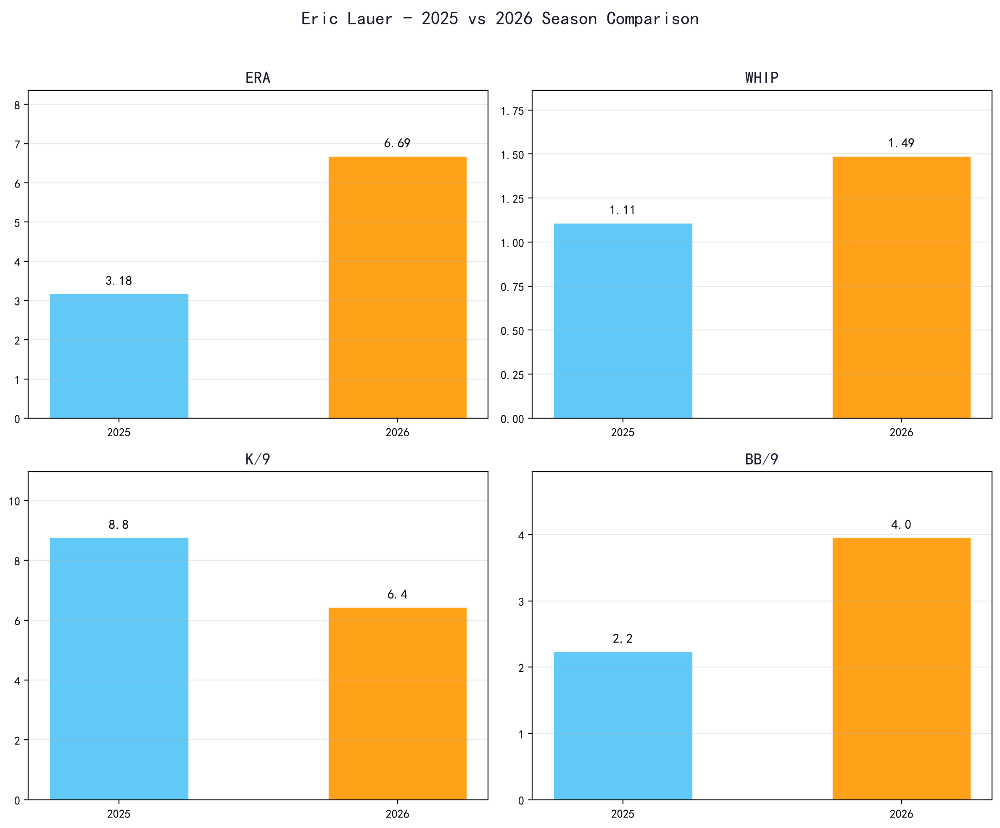
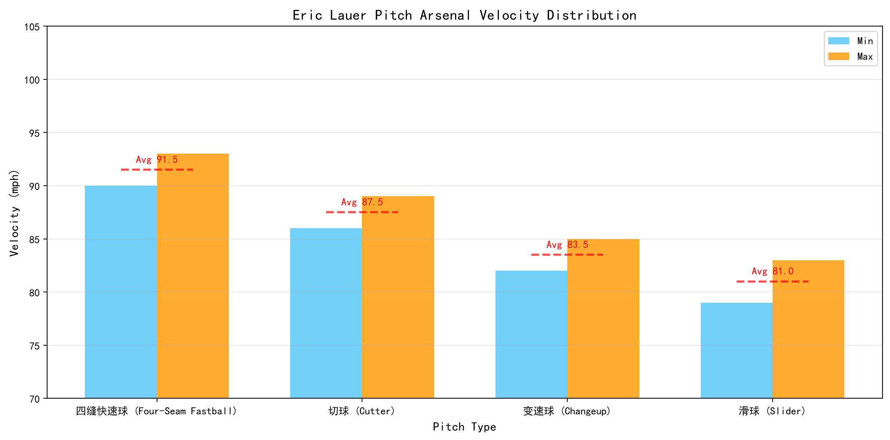
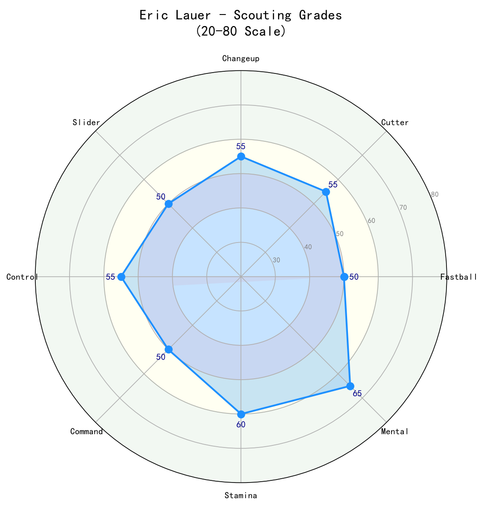

Los Angeles Dodgers #33 | 左投先发 (LHP) | 活跃

Eric Lauer 是一名经验丰富的左投先发，以稳定的控球、变化的球速和顽强的竞赛态度著称。他在大学时期就是全国顶级投手，2016年以首轮第25顺位被圣地亚哥教士选中。
2025年，他在蓝鸟队缴出 9胜2败、3.18 ERA、104.2局的优质赛季，并在季后赛中多次挺身而出，包括世界大赛第3战对道奇的4.2局无失分救援。2026年他转战道奇队，但赛季初期数据有所波动，目前仍在适应新环境和竞争激烈的国联西区。
Lauer 的球风不以球速见长，而是依靠控球、节奏变化和击球软弱度。他的 天花板 可能不是赛扬级别，但作为轮值后端或长中继/左派角色，他依然具备稳定贡献价值。
在 Kent State 大学三年生涯 23-10、1.86 ERA、292 K，大三赛季更缴出0.62 ERA、125 K 的历史级数据。荣获 Collegiate Baseball National Player of the Year 和 College Baseball Hall of Fame Pitcher of the Year。2016年选秀首轮第25顺位被教士选中。
2018年4月24日登上大联盟，成为教士轮值的一员。生涯早期以左投控球型投手定位，逐步积累大联盟经验。
15场先发、9-2、3.77 ERA（74.0 IP）；牛棚13场、1.76 ERA、0.75 WHIP。世界大赛第3战对道奇投出4.2局无失分救援，是自2014年 Madison Bumgarner 以来世界大赛最长无失分救援之一。
2026年加盟洛杉矶道奇，背号33。目前处于适应期，数据虽有起伏，但丰富的左投经验和季后赛履历使他成为道奇轮值/牛棚中值得信赖的老将。

📈 上图为近三年核心数据趋势。柱状图高度代表该年度表现，便于快速比较球员状态的上升或下滑。
| 赛季 | G | GS | W-L | ERA | IP | K | BB | WHIP | K/9 |
|---|---|---|---|---|---|---|---|---|---|
| 2025 | 28 | 15 | 9-2 | 3.18 | 104.2 | 102 | 26 | 1.11 | 8.77 |
| 2026 | 8 | 6 | 1-5 | 6.69 | 36.1 | 26 | 16 | 1.49 | 6.44 |

⚾ 上图为各球种球速区间（蓝=最低球速，橙=最高球速，红线=平均值）。球速差与位移差越大，打者越难锁定单一球路。
90-93 mph
Lauer 的控球主轴，不以球速见长，但进垒点精准。他经常利用上角快速球来抢好球数，或让打者敲出软弱飞球。
86-89 mph
主要用来对付右打者，制造横向位移和 软弱击球。是他在2025年成功的主要变化球之一。
82-85 mph
对付左打者的关键武器，速度差约8 mph，出手点与快速球相似，能制造挥棒时间差。
79-83 mph
作为第四球种，用来在两好球后制造追打。使用频率较低，但能增加球路变化。
Lauer 是一名典型的左投控球型投手。他的快速球均速约91-92 mph，在大联盟先发中并不突出，但他依靠 放球点 的一致性、球路组合和节奏变化来压制打者。他的投球机制简洁，重复性高，这使他能够稳定地进入好球带。
2026年ERA从2025年的3.18飙升至6.69，WHIP从1.11升至1.49，K/9从8.77降至6.44。这显示他的快速球压制力下降，打者更容易将球打进场内。同时保送率上升，反映他在新球队体系中尚未找到最佳节奏。此外，36.1局的小样本也意味着数据波动较大，不能据此判定他已大幅下滑。
控球一直是 Lauer 的核心竞争力。2025年BB/9仅2.24，2026年上升至3.96，需要重新找回好球带边缘的 precision。他的切球和变速球在2025年表现优异，但2026年变化球被击球率偏高，说明打者对他的配球研究更深，需要增加变化幅度或调整使用顺序。
作为左投，Lauer 在道奇队中具备独特的战术价值。他可以在轮值后端稳定吃局数，也可以在牛棚中担任 long relief 或 lefty specialist。2025年他在蓝鸟队已经证明，只要身体健康、节奏稳定，他依然能缴出接近3.20 ERA 的水准。

经验丰富的左投，2025年仍具3.20 ERA 水准。2026年处于适应期，若找回控球和变化球节奏，仍是稳定轮值/牛棚贡献者。
B 级 / 控球型左投
Eric Lauer 的2026年开局不理想，但他的履历显示他具备快速反弹的能力。31岁的他仍处于投手生涯的黄金后期，经验是他的最大资产。在道奇这样的争冠球队中，他可能不需要担任王牌，而是作为稳定左投和长局数提供者。
2026（下半季）：若适应顺利，ERA有望回到4.50-5.00区间，主要作为轮值后端或长中继。
2027：若保持健康，可能恢复至3.80-4.20 ERA 水准，担任150局左右的左投轮值。
2028+：随着年龄增长，逐渐转向牛棚/长中继角色，以经验和控球帮助球队。
Eric Lance Lauer 出生于美国俄亥俄州伊利里亚（Elyria），绰号 "Gomer"。他在 Midview High School 度过辉煌的四年，不仅是棒球队队长和州最佳投手，也是橄榄球队的二队全州球员。2013年，他在第17轮被多伦多蓝鸟选中，但选择进入 Kent State 大学继续磨练。
在 Kent State，Lauer 成为校史传奇之一。三年生涯 23胜10败、1.86 ERA，送出292次三振。大三赛季他缴出0.62 ERA 的全国最佳数据，并荣获 Collegiate Baseball National Player of the Year 和 College Baseball Hall of Fame Pitcher of the Year。2024年，他入选 Kent State 大学体育名人堂。
2016年，圣地亚哥教士在首轮第25顺位选中 Lauer。他在2018年登上大联盟，随后历经教士、酿酒人和蓝鸟等队。2025年在蓝鸟队，他达到职业生涯又一个高峰，常规赛表现出色，更在世界大赛中留下经典救援。2026年，他加盟洛杉矶道奇，希望在这座冠军之城重振旗鼓。
场外，Lauer 是 Cleveland Cavaliers、Browns 和 New England Patriots 的球迷。他喜欢高尔夫、电子游戏和弹吉他。他以沉稳的职业态度和善于调整著称，是更衣室中深受信赖的老将。